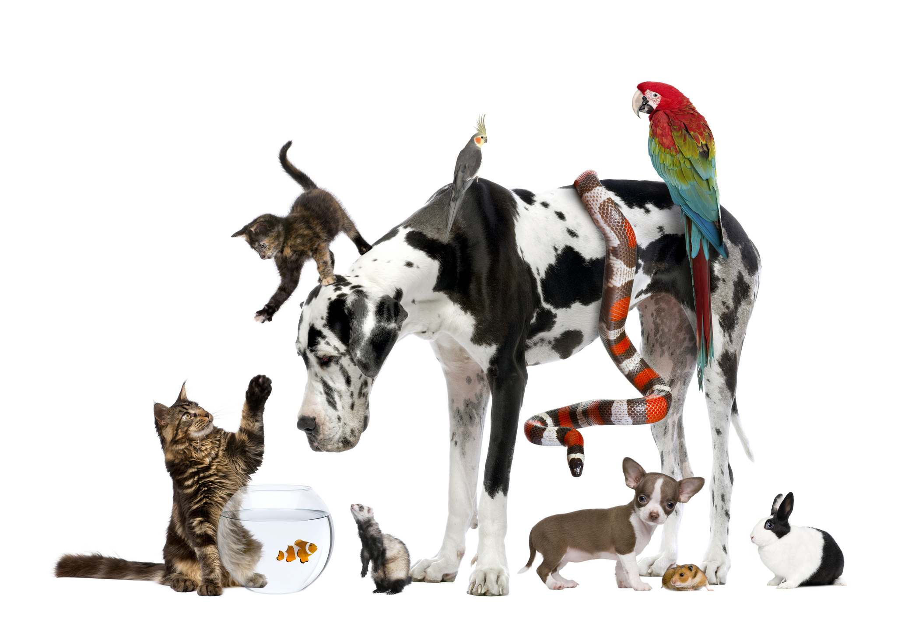

ABOUT ME
I'm John Benedict Nepomuceno, 20 years old and currently pursuing a Bachelor of Science in Nursing.
Outside the school and lecture rooms, you'll find me obsessing over cars and motorcycles — anything with an engine that gets my full attention.
I'm the kind of person who stays curious, stays moving, and never runs out of things to be excited about.
A Little More About Me

I used to have an animal pet such as chickens, cats, and dogs.
Same thing I love my pets as much as I care to my patients.
I really love taking care of them, buying some treats, and having quality time together.